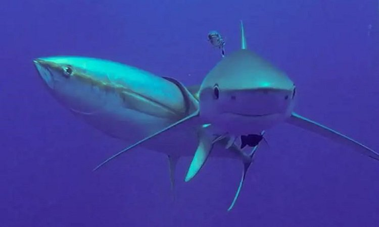

Cá ngừ cọ lưng vào cá mập để thoát khỏi ký sinh trùng

Cá ngừ vây vàng cọ vào cá mập xanh. Ảnh: Chris Thompson
Lỗ chân lông và da cá mập rất sạch và giống như giấy nhám, theo nhà nghiên cứu Chris Thompson ở Đại
học Western Australia. Bằng cách cọ xát vào bề mặt cứng, cá ngừ có thể thoát khỏi ký sinh trùng gây
đau đớn bám vào đầu, mắt và mang của chúng. Thompson và cộng sự công bố kết quả nghiên cứu hôm 19/10
trên tạp chí PLOS One.
Để nghiên cứu thêm về tương tác giữa cá mập và các loài cá khác nhau, Thompson và cộng sự triển khai
camera dưới nước trôi nổi ở tổng cộng 36 khu vực khác nhau tại Thái Bình Dương, Ấn Độ Dương và Đại
Tây Dương, mỗi camera ghi hình 2 - 3 giờ. Thông qua hơn 6.000 lần đặt camera, nhóm nghiên cứu quay
phim 117.000 cá thể thuộc 261 loài. Hàng nghìn giờ quay hé lộ cá ngừ vây vàng (Thunnus albacares)
chiếm 44% thời gian cọ xát. Cá mập xanh (Prionace glauca) là loài dễ bị cá ngừ cọ xát nhất với 58%
thời gian.
Trong tất cả tương tác, cá ngừ cọ xát vào nửa thân sau của cá mập, thường là dọc theo đuôi. Cá mập
bị cọ xát dường như không bận tâm. Thompson chia sẻ, ông rất bất ngờ trước mức độ bình thản của cá
mập. Trong 17% số lần cọ xát, cá ngừ tiếp xúc với đồng loại của chúng. Những loài cá nhỏ hơn ít cọ
xát vào cá mập hơn, nhiều khả năng do sợ bị ăn thịt.
Điều khiến nghiên cứu thực sự đáng chú ý là mức độ đa dạng của các quan sát và chất lượng video,
theo Iain Barber ở Đại học Nottingham Trent tại Anh. Barber nhấn mạnh số lượng cá mập giảm trên khắp
thế giới có thể ảnh hưởng tới nỗ lực loại bỏ ký sinh trùng nguy hiểm của các loài cá khác.
Bình luận
Hai con cá này bự qué:>
WOWWWW!!
Cá xấu :>
Ơ xinh thế!!!